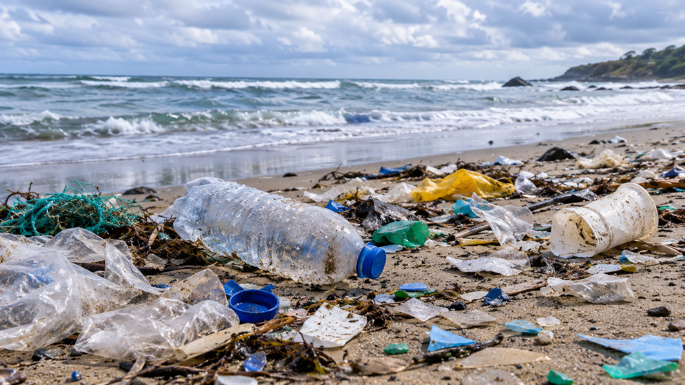

Océans en danger : le plastique envahit nos mers
Chaque année, plus de 11 millions de tonnes de plastique entrent dans les océans. Ces déchets menacent les milieux marins et les espèces qui y vivent. Ce sujet est directement lié à l'Objectif de développement durable n°14 : « Vie aquatique », adopté par les Nations unies dans le cadre de l'Agenda 2030. Cet objectif vise à conserver et à exploiter durablement les océans, les mers et les ressources marines. [1][3]

Des déchets qui menacent les animaux marins
Les déchets plastiques prennent de nombreuses formes : bouteilles, sacs, emballages, fragments et matériel de pêche perdu ou abandonné. Une partie de cette pollution commence loin des côtes : les déchets laissés dans la nature peuvent être transportés par le vent, les eaux de ruissellement et les rivières jusqu'à la mer. Le Programme des Nations unies pour l'environnement (PNUE) estime que plus de 11 millions de tonnes de plastique entrent chaque année dans les océans. [1]
Cette pollution peut blesser les animaux ou perturber leur alimentation. Des tortues, des oiseaux et des poissons peuvent avaler des morceaux de plastique en les confondant avec de la nourriture. D'autres animaux peuvent se retrouver piégés dans des déchets ou des filets. Avec le temps, certains plastiques se fragmentent en microplastiques, des particules minuscules difficiles à récupérer une fois dispersées dans l'environnement. [1][2]
entrent dans les océans, selon l'estimation reprise par le PNUE. [1]
Le problème ne concerne pas seulement les plages visibles. Les déchets peuvent circuler dans les fleuves et les courants marins, se fragmenter et se disperser. Le PNUE rappelle que la pollution plastique affecte les écosystèmes aquatiques et peut également toucher la chaîne alimentaire. C'est pourquoi les spécialistes insistent sur la nécessité d'agir avant que les déchets n'atteignent la mer. [1][2]
Des solutions locales et une réponse internationale encore attendue
À notre échelle, plusieurs gestes permettent de réduire les déchets : utiliser une gourde et des sacs réutilisables, éviter les emballages inutiles, trier correctement et ne rien abandonner dans la nature. Les communes peuvent améliorer la collecte des déchets et organiser des opérations de nettoyage des plages et des berges. Les entreprises et les gouvernements ont aussi un rôle important : réduire les produits jetables et concevoir des emballages plus faciles à réutiliser ou à recycler. Le PNUE souligne qu'il faut agir sur l'ensemble du cycle de vie du plastique, de sa production à sa gestion en fin d'utilisation. [1][4]
La réponse se construit aussi au niveau international. En 2022, les États membres de l'ONU ont décidé d'engager des négociations pour élaborer un instrument juridiquement contraignant contre la pollution plastique, y compris dans le milieu marin. La cinquième session de négociation s'est poursuivie à Genève en août 2025, sans parvenir à un consensus. Une session organisationnelle s'est tenue le 7 février 2026. Au 25 novembre 2026, les discussions préparent une nouvelle étape, appelée INC-5.4, prévue du 13 au 24 mars 2027. Aucun traité final n'a donc encore été adopté. [4][5]
« Les plastiques constituent […] au moins 85 % du total des déchets marins. » PNUE, rapport De la pollution à la solution (2021). [6]
La pollution plastique des océans est donc un défi mondial qui demande des efforts à tous les niveaux. Les gestes individuels sont utiles, mais ils doivent être accompagnés de décisions collectives, de meilleures solutions de gestion des déchets et d'une coopération entre les pays. Protéger la vie aquatique commence par empêcher les déchets d'arriver jusqu'à la mer.
À retenir
L'ODD 14 ne concerne pas seulement les océans lointains : il rappelle que les choix faits sur terre ont des conséquences sur les mers. Réduire les déchets à la source est une partie essentielle de la solution.
L'Écho de la Planète · Édition du 25 novembre 2026